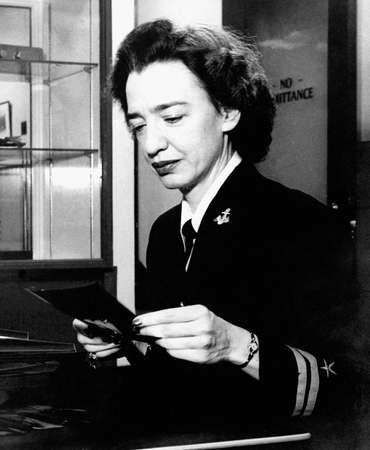
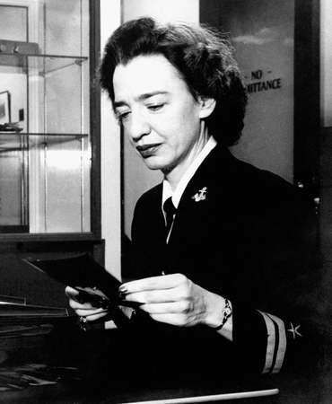

From a young age Grace Hopper was interested in the way that things worked. She took this love and turned it into an amazing career! By the end of her life she contributed to the world in many ways. She contributed by teaching mathematics, serving in the US Navy (multiple times) and she made many contributions to the world of computer science, including programming languages, computer bugs and so much more! Overall she was amazing and made great steps forward in the history of computers!
Fun Fact: Grace Hopper played a role in the first computer bug obstacle - literally, a moth was found in the computer.
 
